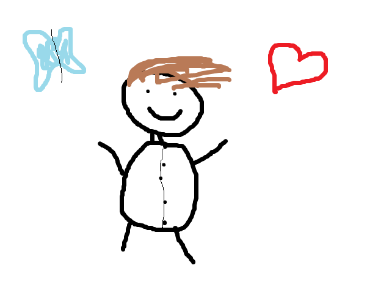
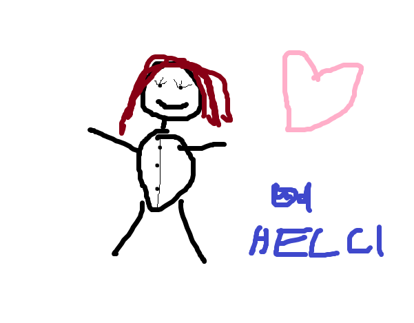
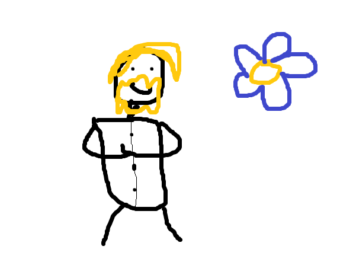

W Restauracji nad Olbrzymim Schabowym tworzymy zgraną ekipę pasjonatów kulinarnych sztuk, gotujących z sercem i dbających o każdy detal, aby zapewnić Wam niezapomniane doznania smakowe.
Józef jest szefem kuchni. To zdecydowany pasjonat, który swoją werwą i energią zaraża innych! Swoją pasję rozwijał podróżując po świecie i poznając najróżniejsze kuchnie. Jednak stwierdza jednoznacznie: "Najlepiej to u nas!". Chyba każdy głodny student jest mu wdzięczny, że tak wielką pasję rozwija blisko uczelni?
Marta jest zastępczynią szefa kuchni. W naszej ekipie od niedawna. Marta jest utalentowaną i kreatywną kucharką, która lubi odkrywać nowe smaki i składniki, ale kocha również te tradycyjne!. Czy ktoś kiedyś nie zachwycił się jedząc jej fenomenalne pierogi?
Paweł to człowiek młody i pełen pozytywnej energii, która udziela się wszystkim w kuchni i poza nią!. Chyba nie ma drugiej osoby, która aż tak cieszy się, gdy robi coś dla drugiego - gotowanie jest dla niego nie tylko pracą, ale też przyjemnością! Paweł jest również bardzo dbały o higienę i porządek w kuchni. Czy ten człowiek czegoś nie umie?
Autorem tych przecudnych portretów jest 3-letnia Helcia! Nic piękniejszego nigdy nie widzieliśmy!